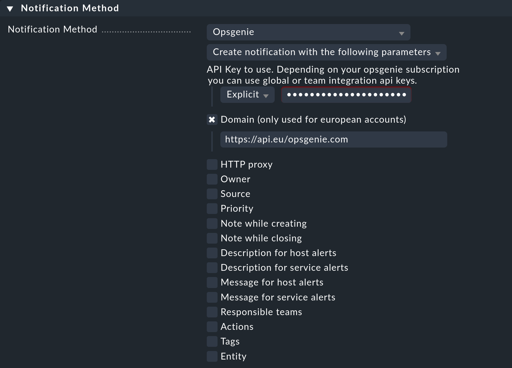

Opsgenie, now a part of Atlassian, as an incident management platform provides alerting and escalation for support teams, and can integrate many external tools, including Checkmk. The basic connection requires only an API key and a URL, but you can also specify other options in Checkmk, such as additional information depending on the notification’s source type.
1. Configuring Opsgenie
You can find a short guide on how to integrate Checkmk directly within Opsgenie — but this is based on an older Checkmk version where you had to pass a complete URL including API key. In current versions, you enter the URL and key separately. In addition, the URL is only required for accounts hosted in Europe.
Create a team or call up an existing one.
Choose the entry Checkmk under Integrations/Add Integration.
In the displayed — incorrect — instructions you will find a URL under Paste, including options and API key. Copy the domain part of the URL (
https://api.eu.opsgenie.com).Next copy the API key and save the integration.
2. Configuring Checkmk
You have already learned how to set up Checkmk notifications in general in the article on notifications.
In Checkmk it is now sufficient to specify the two data copied above:
Create a new notification rule with Setup > Events > Notifications > Add rule.
For the Notification Method choose Opsgenie.
Enter the copied key under API Key to use.
-
Activate — as an EU user — the Domain check box, and paste the copied URL there:
Instead of entering the URL directly here, you can also read it from the password store - provided it was previously stored there.
The configuration of the Opsgenie notification method provides you with all kinds of additional options, especially for enriching and changing the default contents of the notifications. In addition, you can use the Responsible teams item to specify the Opsgenie team if you have not specifically integrated for one team as described here, but for the entire Opsgenie account — which is only possible with certain subscriptions.
When using the following Contact selection box, note the following two points:
When selecting contacts, make sure that the notifications are only sent to one contact, e.g. by selecting a single user. With the notification methods for ticket systems etc., the contact selection only serves to specify that notifications are sent. However, the notifications are not sent to the selected user, but to the ticket system. Note that a contact selection via contact groups, all contacts of an object or similar usually generates several identical notifications for an event, which then end up in the ticket system twice, three times or even more often.
If the first point is fulfilled, but the user is used in several notification rules for the same method, then only the last rule applies in each case. It is therefore advisable to create a separate functional user for each of these notification rules.
You can find out how to test the new notification method in the article on notifications.